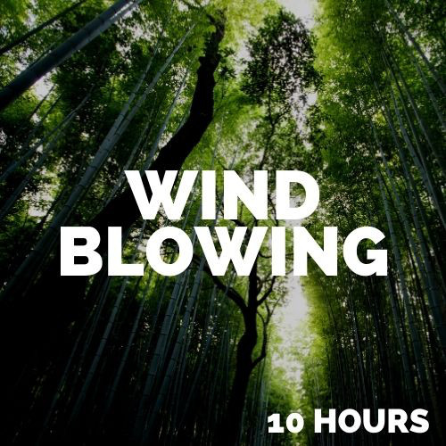

Hello world! My name is Ismail, a fellow traveller on this journey called life. Personal Media Biography| Sound file name | Description | Embedded mp3 file and source |
|---|---|---|
| relaxing-river-sound.mp3 | Why? -- This is a sound that soothes me, a personal gift to humanity from the organic entity of planet earth. So soothing, so relaxing and magical are the sounds of nature. Please listen and enjoy, find peace and tranquilty, the best accompaniment for a meaningful path on the journey of life. | |
| wind-blowing-through-trees.mp3 | Another offering to give you some peace and simultaneously offer a nod of gratitude in the direction of the grand ruler of human boundaries; nature. Why? -- As much as mankind wields unlimited power, the power of nature can erase our existence at any moment with one seismic ripple in the bed of an ocean. Hear the sound of the wind, it is a beautiful representation of life's unchartered and unique bespoke movement. | |
| sheep-sound.mp3 | Why? -- why not? Sheep are intriguing with their 360° vision, which in my humble opinion, makes sheep probably as insightful and visionary as you can get! They are the only animals beside humans that show a same sex preference for life! Sheep are social animals and have a flocking instinct. Sheep have rectangular pupils "Here's looking at you kid!" | |
| Image file name | Description | Embedded image file and source |
| relaxing-river.jpg | This is it! My recommendation is play the audio and look at the image and feel the sensation. For me it creates a sanctuary away from the hustle and bustle the stress and pressure of day to day life. It is almost like being a child taking the hand of your mother knowing you are safe and that you are going somewhere peaceful. |
image source link |
| wind-blowing-through-trees.jpg | There is actually a lot of interest nowadays in wellbeing and an enormous focus on using audio/visual stimulation to create tranquility. Such natural phenomena as sounds of wind blowing are more popular today than ever. The image expresses serenity clearly. My appreciation for a clean state of mind creates an affinity with this image, how about you? | 
image source link |
| sheep.jpeg | This image seems to illustrate the concept that sheep adhere to, which is; "safety in numbers". We often hear the expression "Don't be a sheep, be a shepherd". Jesus Christ the most famous and peaceful human spent time with sheep so it could possibly mean these animals can have a positive influence on humans. Is it such a clear choice? For example from the perspective of Jesus representing mankind, he faced danger daily as a peaceful individual. And humanity or the indivual, also faces threats daily, although humans are predators, we also face dangers daily, just like sheep. So sheep or shepherd????? |
image source link |
| Video file name | Description | Embedded mp4 file and source |
| relaxing-river.mp4 | In my opinion a totally blissful sound. One that settles the mind, body and soul. What do you think? Enjoy! | |
| wind-blowing-through-trees.mov | Life is obviously about movement, our planet rotates, life begins and ends. The winds of change always blow across the planet. We must learn to embrace that and accept the sensation of change, changes that are desirable and undesirable. Grand opening, Grand closing. | |
| sheep.mp4 | And here it is, if you're feeling "sheepish" (pun intended) by the appearance of and sound of the flock that's ok, it does look and sound quite intimidating... don't worry they're harmless! | |
| Svg file name | Description | Embedded Svg file and source |
| rubics-cube.svg | The most mind blowing and challenging invention that caught my attention as a young boy! Really was motivated to turn up at school with this thing solved. The rubics cube definitely took hours away from me in the hope of cracking it... much different from the distraction of today! |
SummaryThank you for taking time to get to know me. It should be a pleasant experience, my outlook is to be a source of positivity even in the face of hostility. The calmness of nature heals our planet so the calmness of mankind is surely the solution to heal humanity. Thank you. |
{kind=link}
{kind=link}